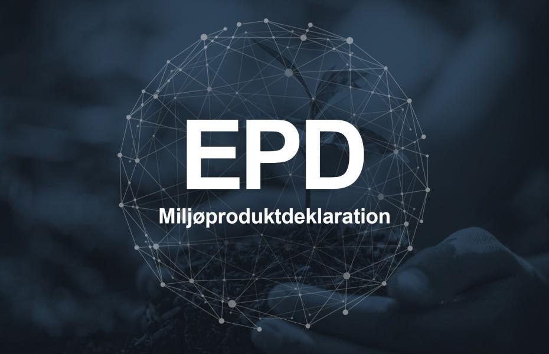
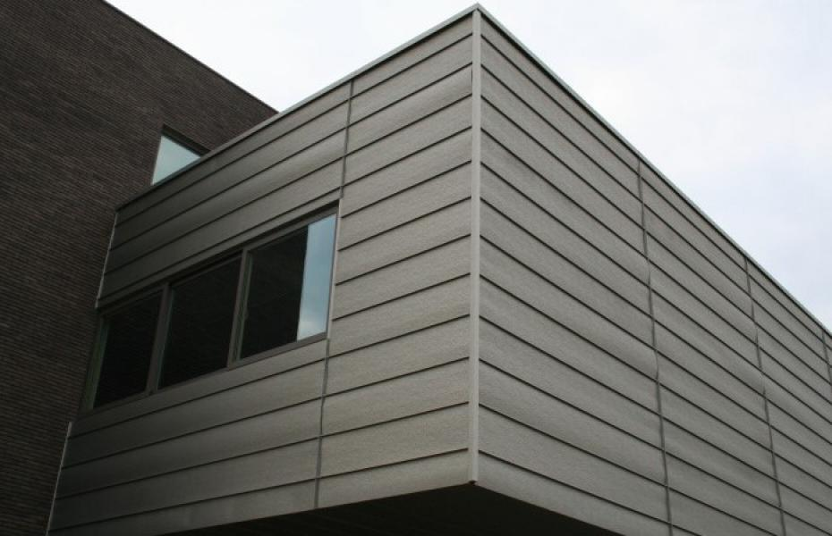
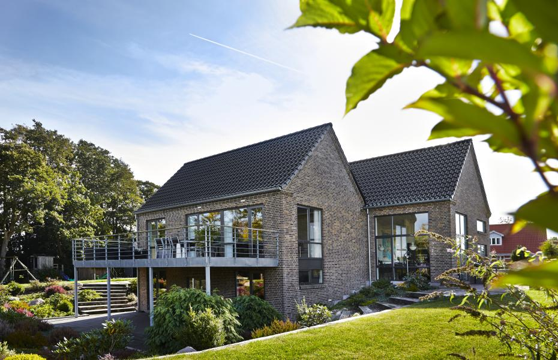
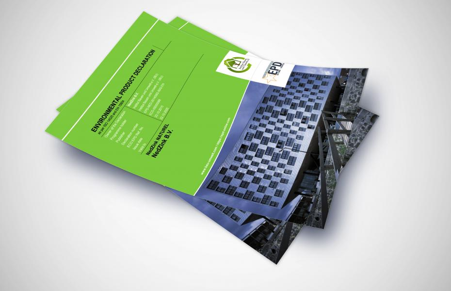

Hvordan måler man bæredygtigheden af forskellige byggematerialer?
Spørgsmålet om, hvad der er et bæredygtigt byggemateriale, er ikke nemt at finde svar på, da ”bæredygtigt byggemateriale” kan fortolkes på mange forskellige måder. Der eksisterer desværre heller ikke en liste over ”de bedste eller mest bæredygtige materialer”. Det afhænger altid af, hvad der kræves.
Nogle leder efter løsninger for at gøre et hus mere energieffektivt. Andre ønsker måske at vide, hvilket materiale der har haft mindst påvirkning på miljøet i fremstillingsfasen; og der er også mange, der ønsker at vide, om et materiale er fremstillet på en ansvarlig måde, eller om materialet er genanvendeligt.
For at vurdere dette komplekse område er der i løbet af de sidste to årtier opstået et sæt initiativer, der nu har udviklet sig til en række europæiske standarder. Disse standarder angiver reglerne for måling og rapportering af byggeriets bæredygtighedsperformance og dækker miljømæssige, sociale og økonomiske parametre. De kan anvendes både på systemniveau (bygningsniveau) og på materialeniveau (byggedele).
Miljøvurdering: Typer af certificeringer
Der er mange forskellige miljøvurderingsordninger og bæredygtighedscertificeringer i brug globalt, og det er langtfra let at forstå deres ligheder og forskelle.
Miljøvurderingsordninger kan klassificeres på to forskellige måder. På den ene side kan vi skelne mellem certificeringer på bygnings- og byggematerialeniveau. På den anden side kan ordninger klassificeres som miljømærker/miljøcertificeringer og miljødeklarationer.

Bygningsniveau vs. materialeniveau
Når det gælder bæredygtighedscertificering på bygningsniveau, kan de miljømæssige, økonomiske og sociale forhold kvantificeres og sammenlignes vha. certificeringssystemer som DGNB, LEED og BREEAM. I dansk sammenhæng er DGNB af Danish Green Building Council det mest udbredte certificeringssystem og danner fundament for den danske certificeringsordning. En af de store fordele ved DGNB er, at det, udover det miljømæssige forhold, sætter stort fokus på bygningens totaløkonomi.
Bæredygtighedscertificeringer er i rivende udvikling og opdateres løbende efter forskellige typer bygninger. DGNB-certificering i Danmark er stadig relativt nyt: Det var først i 2012, at den danske version af DGNB-certificeringen blev lanceret og siden da har fået væsentlig betydning.
På materialeniveau kan man også finde en lang række certificeringer: EPD (miljøproduktdeklaration eller miljøvaredeklaration på dansk), svanemærke, EU-blomsten, cradle-to-cradle-certificering, osv.
Mange miljøvurderingsordninger – både på bygnings- og materialeniveau – bygger på livscyklusvurdering (LCA), der er en metode til at evaluere alle input og output samt potentielle miljøbelastninger for et produkt eller system (fx en bygning) i hele dets livscyklus: fra anskaffelse af materialet til endt brug og genanvendelse.

Miljømærker/miljøcertificeringer vs. miljødeklarationer
Miljømærker/miljøcertificeringer leverer en absolut vurdering eller bedømmelse af et byggeprodukt eller system, baseret på en række kriterier. De er baseret på pointgivende krav og giver et ”grønt stempel” til materialer eller systemer, som opfylder kriterierne, dvs. de tildeler point i alle definerede kategorier.
Miljødeklarationer giver på den anden side en præcis kvantificering af byggeløsningers performance i forhold til forskellige kategorier. Miljødeklarationer bedømmer ikke produktet som ”grønt”, ”godt” eller ”bæredygtigt”. De siger ikke noget direkte om bæredygtigheden af byggematerialet. De giver blot en deklaration af og præcise data om de miljømæssige påvirkninger, hvilket danner et fremragende grundlag for en relativ vurdering (benchmark). Efter sammenligning af EPD’er fra forskellige producenter får man svar på, om ét byggemateriale er mere bæredygtigt end et andet.
På bygningsniveau anvender man typisk miljøcertificeringer, mens man på produktets niveau kan anvende både miljømærker og miljødeklarationer. Nogle af de mest udbredte miljømærker (certificeringer) på byggematerialeniveau i Danmark er svanemærke og cradle-to-cradle-certificering, og den mest anvendt miljødeklaration er EPD (Environmental Product Declaration eller miljøproduktdeklaration/miljøvaredeklaration på dansk).
Alle miljøvurderingsordninger har deres fordele og begrænsninger. Baseret på vores kunders behov og kravene fra de mest anvendte miljøvurderingsordninger på bygningsniveau har NG ZINK i samarbejde med NedZink valgt at udarbejde EPD’er på tre zinkmaterialer: blank zink (NedZink Naturel), forpatineret zink (NedZink Nova) og sort zink (NedZink Noir).

Hvad EPD kan
EPD er en essentiel del af bæredygtigt byggeri og spiller en uvurderlig rolle i kvantificering af bæredygtigheden i forskellige byggeprojekter. Vi har samlet nogle af de vigtigste fordele ved at anvende en byggeløsning med EPD i dit byggeprojekt.
- EPD er en frivillig dokumentation af byggematerialets miljømæssige egenskaber. EPD viser, at producenten tager sit ansvar alvorligt. Producenter, der udarbejder EPD’er, har typisk produkter, der har en meget god miljøprofil, og vil gerne præsentere resultaterne for deres potentielle kunder. Virksomheder, der ikke har udarbejdet EPD’er (og slet ikke har miljømærker), har ofte et produkt, der ikke lever op til kravene for bæredygtigt byggeri, eller som performer betydeligt værre på miljømæssige parametre end produkter med den samme funktion.
- EPD sætter – i modsætning til de fleste miljømærker – fokus på emissioner i stedet for at fokusere på indholdet af byggematerialet. Det giver en mere dybtgående viden og præcise data om materialets påvirkning af miljøet.
- Kernen i en EPD er livscyklusvurdering (LCA), dvs. at en EPD indeholder resultaterne fra livscyklusvurderingen. Modsat miljømærker, der i et vist omfang er baseret på generiske, eksisterende LCA’er, udarbejder man en helt ny, detaljeret LCA til det konkrete produkt, når man laver en EPD.
- Produktspecifikke EPD’er kan bruges som input til LCA’er på bygningsniveau. Kigger man fx på DGNB’s krav, er der flere kriterier, der fokuserer på livscyklusvurdering (fx ”LCA – primær energi”, ”LCA – miljøpåvirkninger”). DGNB og andre bygningscertificeringsordninger stiller også krav om produktspecifikke EPD’er som dokumentation. Kriterier relateret til livscyklusvurdering og EPD udgør en høj andel af den samlede bedømmelse ved DGNB-certificering, og man kan opnå mange points i certificeringssystemet, hvis man bruger byggematerialer med EPD’er.
- EPD er et beslutningsværktøj. EPD’er bedømmer ikke materialet som godt eller dårligt ud fra et miljømæssigt synspunkt, men til gengæld giver de adgang til et bredt spektrum af miljødata om produktet, som kan sammenlignes med andre produkter. På denne måde hjælper EPD’er med at træffe det mest bæredygtige valg. EPD inkluderer data om bl.a. global opvarmning, nedbrydning af ozonlaget, materialer til genanvendelse, bortskaffelse af farligt affald, affaldsgenerering m.m., hvilket langt de fleste andre certificeringer og miljømærker ikke indeholder.
- EPD’er gør det muligt at kvantificere byggematerialers ”indlejrede påvirkninger” – et koncept, som får stigende fokus i bæredygtigt byggeri. På nuværende tidspunkt er der stadig ikke nok data og cases til at fastlægge, hvad et fornuftigt niveau for indlejret energiforbrug er. Ifølge mange eksperter er udarbejdelsen af EPD’er i forskellige produktkategorier nøglen til etablering af standarder mht. byggematerialers indlejrede påvirkninger.
- Mens EPD’er ikke siger noget konkret om cirkulær økonomi, indeholder de data om ”endt levetid” og ”næste produktsystem” (genanvendelse), hvilket øger bevidstheden om materialets cirkularitet. Cirkulær økonomi er stadig et meget nyt begreb, og opskriften for cirkulær økonomi i byggebranchen er ikke standardiseret og veldefineret. Men EPD’er har et rigtig stort potentiale som dokumentationshjælp, når byggebranchen begynder at fastlægge standarder og kvantificere begrebet ”cirkulær økonomi”.

Hvad EPD ikke kan
EPD har også nogle begrænsninger, hvor anvendelse af andre miljøcertificeringer eller miljømærker kan være nyttig.
- EPD sammenligner ikke produktets bæredygtighed med andre byggeprodukter, der har den samme funktion, og bedømmer heller ikke produktets bæredygtighed med scoring i forskellige kategorier. Det er derfor byggefirmaets ansvar at analysere og sammenligne forskellige producenters EPD’er og evaluere, hvilket produkt der er mest bæredygtigt.
- Der er stadig nogle kategorier i EPD, der ikke er obligatoriske. Dvs. at producenten kan få en EPD, selv hvis den ikke afslører data om nogle vigtige miljømæssige spørgsmål. Det kan derfor give udfordringer i sammenligningsprocessen. Nye reguleringer kan dog forventes at træde i kraft allerede dette år, og det forventes, at det bliver obligatorisk at inkludere data om produkternes genanvendelses- og genvindingspotentiale i EPD’er (lige nu er det en valgfri kategori).
- EPD’er kvantificerer ikke toksicitetspåvirkninger af kemikalier i produktet, og heller ikke indeklimapåvirkninger. Disse data kan ofte findes i miljømærker og andre certificeringer.
- Det kan være svært at få adgang til eksisterende EPD’er, når man selv skal undersøge og finde dem. Det er også en udfordring, at mange danske virksomheders EPD’er er udarbejdet i udlandet hos deres leverandører og ikke nødvendigvis er offentliggjort på virksomhedens hjemmeside.
NG ZINK og bæredygtigt byggeri
Som denne artikel illustrerer, er der rigtig mange muligheder for at måle bæredygtighed, både på bygnings- og produktniveau. For flere detaljer om emnet anbefaler vi, at man undersøger individuelle miljøvurderingsordninger for at se, hvilke der giver mest mening til byggeprojektets bæredygtighedsformål.
Vores mission i NG ZINK er at bidrage til den grønne omstilling i Danmark og give et bæredygtigt valg til byggefirmaer, bygherrer og boligejere i hele landet. Vores EPD indeholder uvurderlige miljømæssige data, man skal kende, når man er i gang med et bæredygtigt byggeprojekt. Download vores EPD her, eller tjek vores nye hjemmeside, hvor du kan få en mindre teknisk, men lige så interessant, forklaring på, hvordan vi dokumenterer bæredygtigheden af vores byggeløsninger.